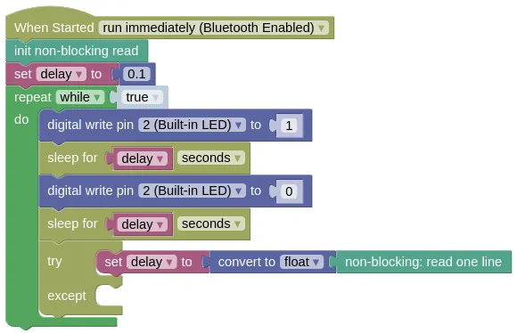

Non-Blocking Read
Normally, when you read from the terminal (...monitor) using the prompt for input with message block or Python's input(), it works in a Blocking manner.
This means that the program stops at that point until data is available to read.
Blocking is often undesirable, as it prevents your program from doing anything else while waiting for input.
This extension allows you to read without blocking. If data isn't available, it will return an empty string.
Code
This program will blink the built-in Blue LED, while also reading from the input.
A try except is used to convert the input into a float, as the input may contain an string that cannot be converted into a number (eg. 'abc').
Without the try except, the program will exit with an exception.
Blocks

Python
import non_block
import time
from ioty import pin
nblock = non_block.NonBlock()
delay = 0.1
while True:
pin.digital_write(2, 1)
time.sleep(delay)
pin.digital_write(2, 0)
time.sleep(delay)
try:
delay = float(nblock.readline())
except:
pass
Results
The LED should blink rapidly. Type '0.5' into the textbox in Monitor, and send it; you should now see the LED blink slower.
non_block - non-blocking reading from terminal
Constructors
non_block.NonBlock()
Create a NonBlock object.
Returns a NonBlock object.
Methods
NonBlock.read(count)
Reads the specified number of characters. If the available characters to read is less than what was requested, an empty string will be returned.
The arguments are:
countAn integer specifying the number of characters to read. Use-1to read all available characters.
Returns a string containing the requested number of characters, or an empty string if there are insufficient characters available to read.
NonBlock.readline()
Reads a full line (...until \n is found)
If a full line isn't available to read, it will return an empty string.
Returns a string containing the a line of characters (...including the trailing \n), or an empty string if a full line isn't available to read..